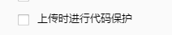

问题1：
网格点击？
类似五子棋或者棋盘等
最好的方式每个网格上添加一个node
监听node的事件
|
问题2：
圆形头像制作？
用节点添加mask制作的圆形会有锯齿，发现怎么都消除不掉
可以用shader来制作，不同版本shader有兼容问题，具体什么版本去论坛找
问题3：
版本兼容问题？
用什么cocos版本制作的游戏，最好保持cocos版本，cocos版本向下兼容比较差
会经常导致不可用
问题4：
判断什么平台？
//不同的平台旋转不同的 type |
问题5：
如何设置全局变量？
可以用js的单例模式，创建一个appdata的单例，在其他地方require或者import
更改appdata数据可以创建
问题6：
微信调试问题？
必须是一个小游戏的类目的appid，调试才能出来，小程序申请在服务类目中选择游戏及就是小游戏
在微信的开发者工具里面，本地设置不要勾选这个选项，会出现调试加载100%然后卡住的现象

问题7：
动画帧事件？
动画帧事件，必须在这个动画组件的node上挂载一个script，然后里面有帧事件对应的方法名
问题8：
Node上的脚本A，调用脚本B的事件
将脚本B挂到Node节点上
const b = this.node.getComponent('B'); |